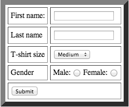
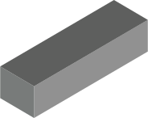

about:me
Rob Dodson
Staff Developer Advocate, 

Today's agenda
What is Polymer?
Working with Polymer
Example time
Let's go back in time...

Elements are the building blocks of the web

Elements are encapsulated
<select> <option>Small</option> <option>Medium</option> <option>Large</option> </select>
Elements are configurable
<select id="schwag"> ... <option disabled>Medium</option> <option disabled>Large</option> <option selected>XX-large</option> </select>
<select size="4" multiple> <option>Do</option> <option>Re</option> <option>Mi</option> ... </select>
<select> <option>Small</option><li>Medium</li><option>Large</option> </select>
Elements are composable
<select>
<optgroup label="German Cars">
<option>Mercedes</option>
<option>Audi</option>
</optgroup>
...
</select>
<form>
<select name="size">
<option value="s">Small</option>
<option value="m">Medium</option>
<option value="l">Large</option>
</select>
</form>
Elements are programmable
var foo = mySelect.selectedIndex;
So what happened?
Building a tab component today


<x-tabs> <x-tab>Tab 1</x-tab> <x-tab>Tab 2</x-tab> <x-tab>Tab 3</x-tab> </x-tabs>
Web Components are a set of emerging standards that allow developers to extend HTML.
Templates
Custom Elements
Shadow DOM
HTML Imports

Polymer is a library that uses the latest web technologies to let you create custom HTML elements.
Layers of Polymer

Elements
Reusable custom elements (in progress)
Polymer
An opinionated way to work with Web Components
Platform
Web Components polyfills for all
modern browsers
Native
The current browser landscape
Three ways to work with Polymer
Using elements
Creating elements
Utilizing the modern web platform
Three ways to work with Polymer
Using elements
Creating elements
Utilizing the modern web platform
Using
polymer-project.org/docs/elements/
Everything is an element
Polymer UI elements
visual elements


<polymer-ui-accordion>
<polymer-ui-animated-pages>
<polymer-ui-overlay>
<polymer-ui-card> demo
<polymer-ui-sidebar-menu> demo
<polymer-ui-tabs> demo
<polymer-ui-toggle-button> demo
<polymer-ui-theme-aware>
Everything is an element
Tabs revisited
<script src="platform.js"></script> <link rel="import" href="polymer-ui-tabs.html">
<polymer-ui-tabs selected="0"> <span>Home</span> <span>About</span> <span>Contact</span> </polymer-ui-tabs>
Everything is an element
Collapsible elements
<script src="platform.js"></script> <link rel="import" href="polymer-ui-collapsible.html">
<polymer-ui-collapsible>
<h3 class="polymer-ui-collapsible-header">Click Me!</h3>
<div>
some content...
</div>
</polymer-ui-collapsible>
Everything is an element
Toggle Button Element
<script src="platform.js"></script> <link rel="import" href="polymer-ui-toggle-button.html">
<polymer-ui-toggle-button offcaption="Nope"> </polymer-ui-toggle-button>
You don't have to know about their internals
Polymer elements
non-visual utility elements
Layout
<polymer-layout>
<polymer-flex-layout>
<polymer-grid-layout>
View
<polymer-media-query>
<polymer-page>
Services / libs
<polymer-shared-lib>
<polymer-google-jsapi>
Data
<polymer-localstorage>
<polymer-xhr>
<polymer-jsonp>
<polymer-file>
<polymer-meta>
Behavior / interaction
<polymer-signals>
<polymer-selector>
Everything is an element
flexbox...using DOM
<script src="platform.js"></script> <link rel="import" href="polymer-flex-layout.html">
<polymer-flex-layout vertical iscontainer> <div>Header</div> <div flex>Body</div> <div>Footer</div> </polymer-flex-layout>
Everything is an element
AJAX...using DOM
<script src="platform.js"></script> <link rel="import" href="polymer-ajax.html">
<polymer-ajax url="http://gdata.youtube.com/feeds/api/videos/"
params='{"q":"chrome", "alt":"json"}'>
</polymer-ajax>
var ajax = document.querySelector('polymer-ajax');
ajax.addEventListener('polymer-response', function(e) {
console.log(JSON.parse(this.response).feed.entry);
});
ajax.go();
They're easy to add to your project
Creating
polymer-project.org/polymer.html
Declarative element registration
Declarative registration
<link rel="import" href="polymer.html">
<polymer-element name="my-element" noscript>
<template>
<style>h2 { color: orange; }</style>
<h2>Hello from my-element!</h2>
</template>
</polymer-element>
<my-element></my-element>
Declarative registration
<link rel="import" href="polymer.html">
<polymer-element name="hello-element">
<template>
<h2>I can say hello</h2>
</template>
<script>
Polymer('hello-element', {
sayHello: function() { alert('Howdy folks!'); }
});
</script>
</polymer-element>
Binding expressions
Binding Expressions
<polymer-element name="owner-element">
<template>
<h2>{{owner}} built me with Polymer</h2>
</template>
<script>
Polymer('owner-element', {
owner: 'Rob'
});
</script>
</polymer-element>
<owner-element></owner-element>
Published properties
Published properties
<polymer-element name="owner-element" attributes="owner">
<template>
<h2>{{owner}} built me with Polymer</h2>
</template>
<script>
Polymer('owner-element', {
owner: 'Rob'
});
</script>
</polymer-element>
<owner-element owner="Alex"></owner-element>
Declarative event handlers
Declarative Event Handlers
<polymer-element name="click-element">
<template>
<button on-click="{{setMessage}}">Click me</button>
<span>{{message}}</span>
</template>
<script>
Polymer('click-element', {
message: 'Waiting to be clicked...'
setMessage: function() { this.message = 'I was clicked!' }
});
</script>
</polymer-element>
Automatic node finding
Automatic Node Finding
<polymer-element name="focus-element">
<template>
<button on-click="{{setFocus}}">Set Focus</button>
<input id="nameInput" type="text">
</template>
<script>
Polymer('focus-element', {
setFocus: function() { this.$.nameInput.focus(); }
});
</script>
</polymer-element>
Polymer features
declarative web components
- Declarative element registration:
<polymer-element> - Declarative inheritance:
<polymer-element extends="..."> - Declarative two-way data-binding:
<input id="input" value="{{foo}}"> - Declarative event handlers:
<button on-click="{{handleClick}}"> - Published properties:
xFoo.bar = 5 <-> <x-foo bar="5"> - Property change watchers:
barChanged: function() {...} - Automatic node finding:
this.$.input.value = 5 - PointerEvents / PointerGestures by default
- Support for Web Animations
Be declarative. Write less code.
Define an API
complex elements require more juice...
- Properties/methods are added to
prototype thisrefers to the element itself (e.g.this.localName == "my-input")- Can reference external scripts/stylesheets (e.g. CSP friendly)
Publishing properties & data-binding
- Inside the element → use data-binding
- Outside the element → users configure us using attributes
Features in action
responsive design...using DOM
<script src="platform.js"></script> <link rel="import" href="polymer-media-query.html">
<polymer-element name="responsive-layout" attributes="responsive">
<template>
<polymer-media-query query="max-width:640px" queryMatches="{{isPhone}}"></...
<template if="{{isPhone && responsive}}"> <!-- Phone markup -->
<content></content>
</template>
<template if="{{!responsive}}"> <!-- Non-responsive case -->
...
</template>
</template>
<script>Polymer('responsive-layout', {responsive: false});</script>
</polymer-element>
<responsive-layout responsive> <div>...</div> </responsive-layout>